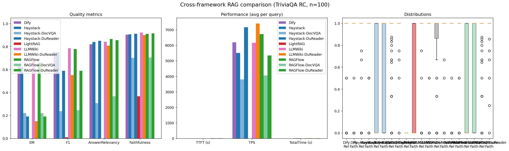
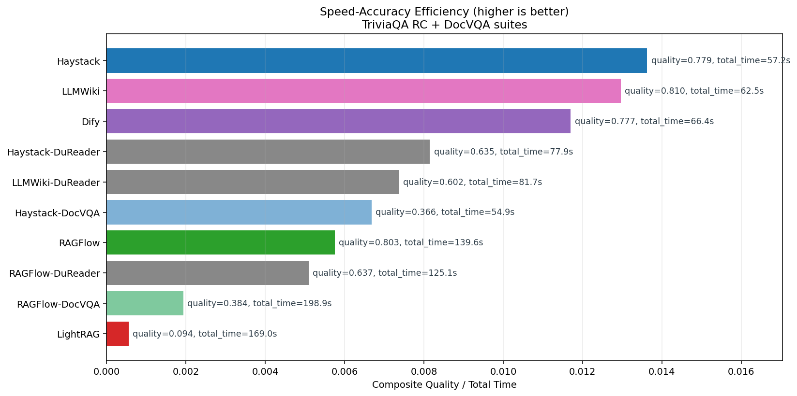
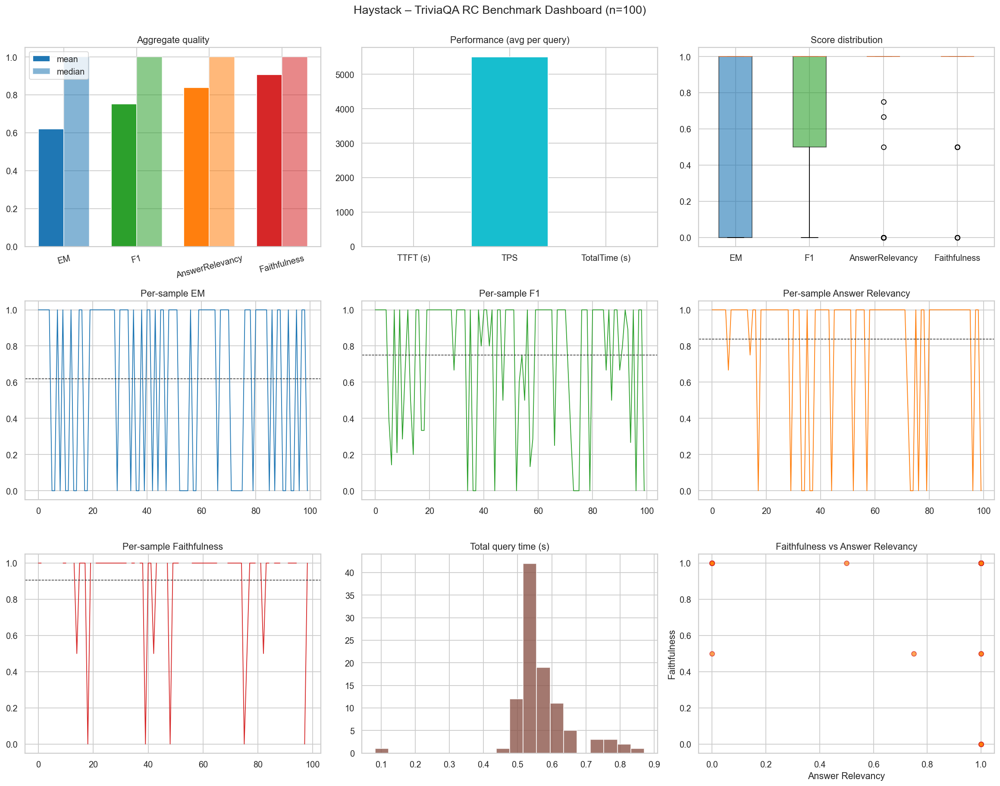
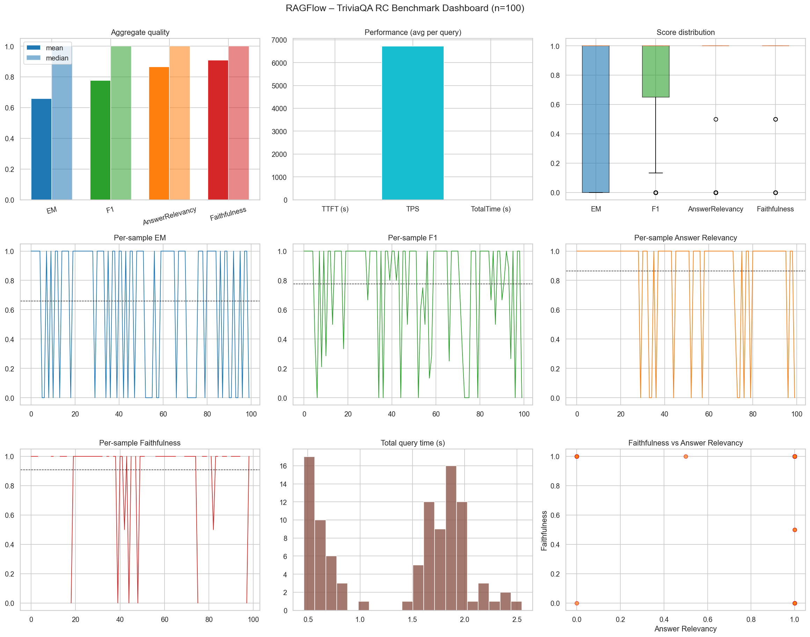
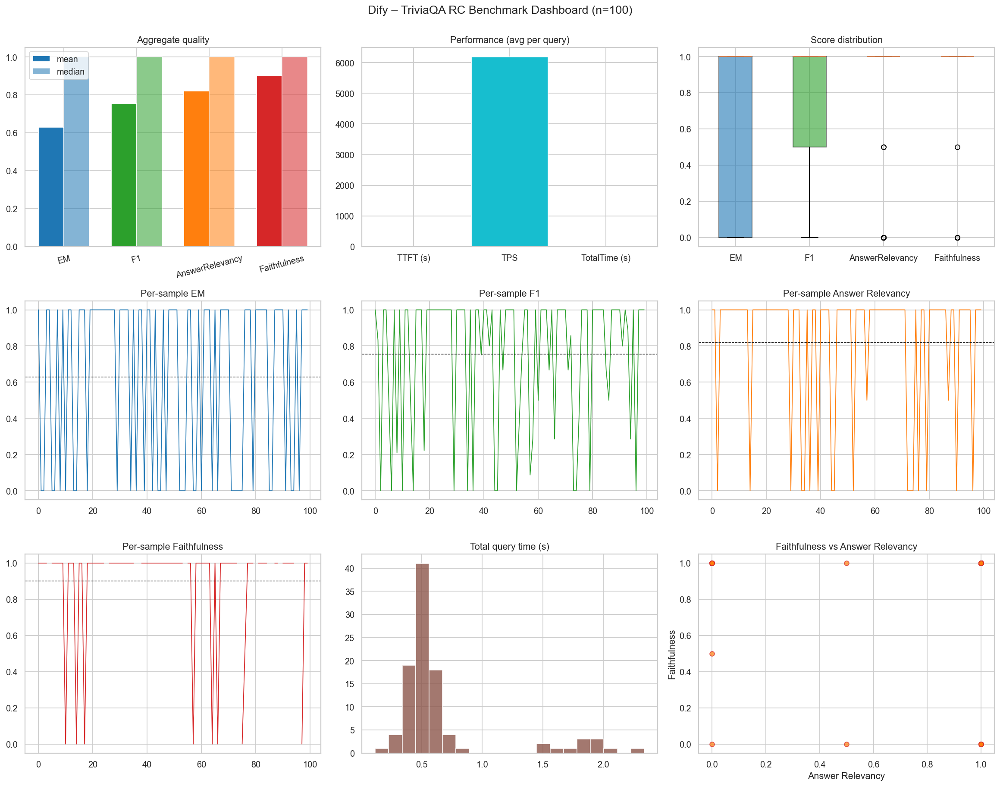
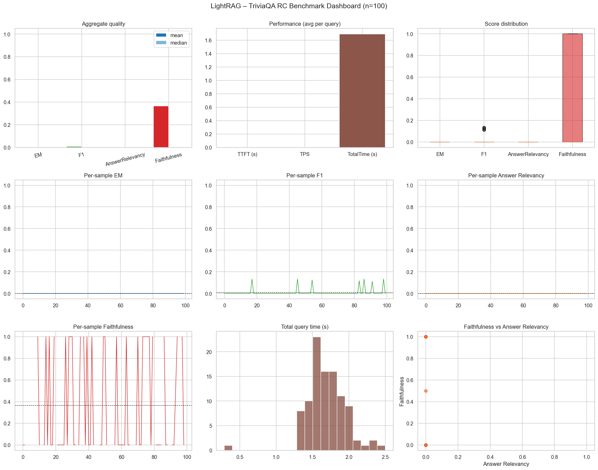
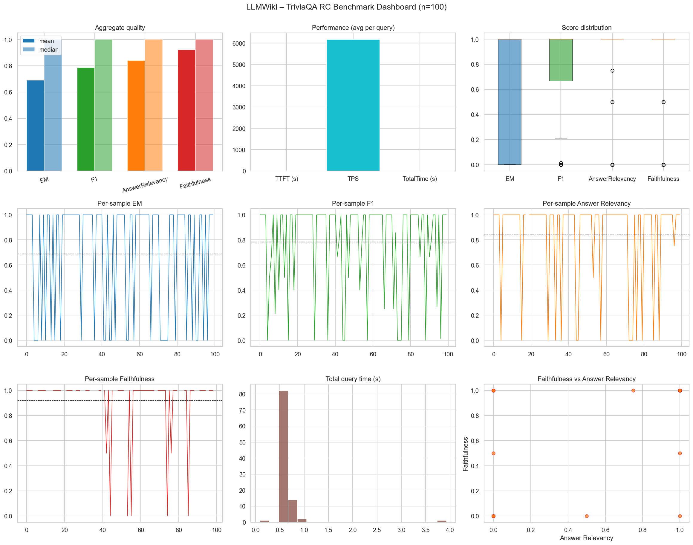
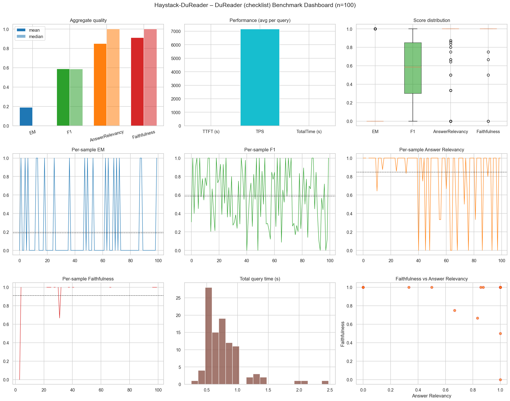
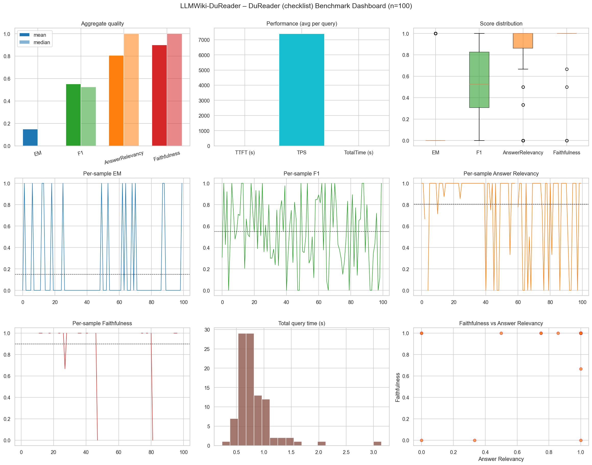
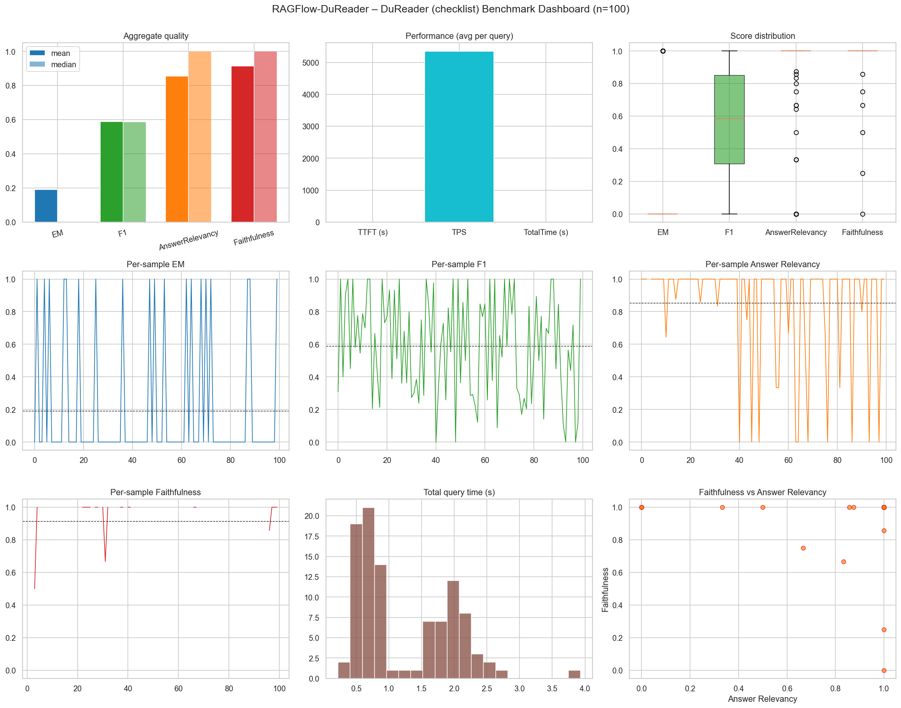

Implementation Snapshot
Notebooks
5
Samples per run
100
Exports
JSON + CSV + PNG
Frameworks
Haystack, RAGFlow, LightRAG, Dify, LLMWiki
This benchmark suite compares five RAG systems under the same contract: identical corpus, scoring rules, prompt policy, and export schema. LLMWiki is the deliberately-simple Andrej Karpathy baseline (BM25 over the shared corpus + LLM, no embeddings, no reranker) used as a reference point against the full retrieval stacks. The goal is a fair, reproducible quality and performance comparison.
Created and maintained by Axel - Fujifilm.
Haystack: Completed
RAGFlow: Completed
Dify: Completed
LLMWiki: Completed
LightRAG: Technically Broken
TriviaQA RC results for the five primary adapters, followed by the
DocVQA suite runs tagged Haystack-DocVQA and
RAGFlow-DocVQA. DocVQA rows are a different benchmark
(visual document QA) and are not directly comparable to the TriviaQA
rows above — they are listed separately so the comparison CSV
shows which row belongs to which suite.
| Engine | EM | F1 | Answer Relevancy | Faithfulness | Avg TTFT (s) | Avg TPS | Total Time (s) | Sample Count | Timestamp |
|---|---|---|---|---|---|---|---|---|---|
| Haystack | 0.62 | 0.7512 | 0.8392 | 0.9067 | 0.5479 | 5504.45 | 57.18 | 100 | 20260514_204417 |
| LLMWiki | 0.69 | 0.7856 | 0.8409 | 0.9221 | 0.5785 | 6168.35 | 62.48 | 100 | 20260525_221030 |
| Dify | 0.63 | 0.7550 | 0.8200 | 0.9034 | 0.6455 | 6185.01 | 66.42 | 100 | 20260518_232709 |
| RAGFlow | 0.66 | 0.7778 | 0.8650 | 0.9091 | 1.3827 | 6718.39 | 139.57 | 100 | 20260514_233428 |
| LightRAG | 0.00 | 0.0089 | 0.0000 | 0.3667 | 0.0000 | 0.00 | 169.03 | 100 | 20260515_010140 |
| DocVQA suite (separate benchmark) | |||||||||
| RAGFlow-DocVQA | 0.22 | 0.2454 | 0.3658 | 0.7045 | 1.9565 | 4048.36 | 198.95 | 100 | 20260521_044836 |
| Haystack-DocVQA | 0.22 | 0.2373 | 0.3075 | 0.7011 | 0.5293 | 3803.41 | 54.88 | 100 | 20260519_213401 |
Latest DuReader checklist runs (100 samples each) from
haystack_dureader_deepeval_simplified_20260528_044454.json,
llmwiki_dureader_deepeval_simplified_20260528_220123.json,
and ragflow_dureader_deepeval_simplified_20260603_025340.json.
| Engine | EM | F1 | Answer Relevancy | Faithfulness | Avg TTFT (s) | Avg TPS | Total Time (s) | Sample Count | Timestamp |
|---|---|---|---|---|---|---|---|---|---|
| Haystack-DuReader | 0.19 | 0.5882 | 0.8494 | 0.9119 | 0.6792 | 7161.17 | 77.92 | 100 | 20260528_044454 |
| LLMWiki-DuReader | 0.15 | 0.5513 | 0.8067 | 0.8991 | 0.7063 | 7398.31 | 81.69 | 100 | 20260528_220123 |
| RAGFlow-DuReader | 0.19 | 0.5889 | 0.8545 | 0.9150 | 1.1462 | 5345.40 | 125.09 | 100 | 20260603_025340 |
| Delta (Haystack - LLMWiki) | +0.04 | +0.0369 | +0.0427 | +0.0128 | -0.0272 | -237.14 | -3.78 | 0 | Latest pair |
triviaqa_rc_100_corpus.jsonhaystack_deepeval_benchmark_*.json, haystack_deepeval_results_*.csvragflow_deepeval_benchmark_*.json, ragflow_deepeval_results_*.csvlightrag_deepeval_benchmark_*.json, lightrag_deepeval_results_*.csv, lightrag_workdir/dify_deepeval_benchmark_*.json, dify_deepeval_results_*.csvllmwiki_deepeval_benchmark_*.json, llmwiki_deepeval_results_*.csvhaystack_docvqa_deepeval_*, ragflow_docvqa_deepeval_* (separate benchmark; tagged Haystack-DocVQA / RAGFlow-DocVQA in the comparison summary)haystack_dureader_deepeval_*, llmwiki_dureader_deepeval_*, ragflow_dureader_deepeval_* (reported in the new DuReader findings section)charts/comparison_dashboard.png, charts/speed_accuracy_tradeoff.png, framework dashboards









